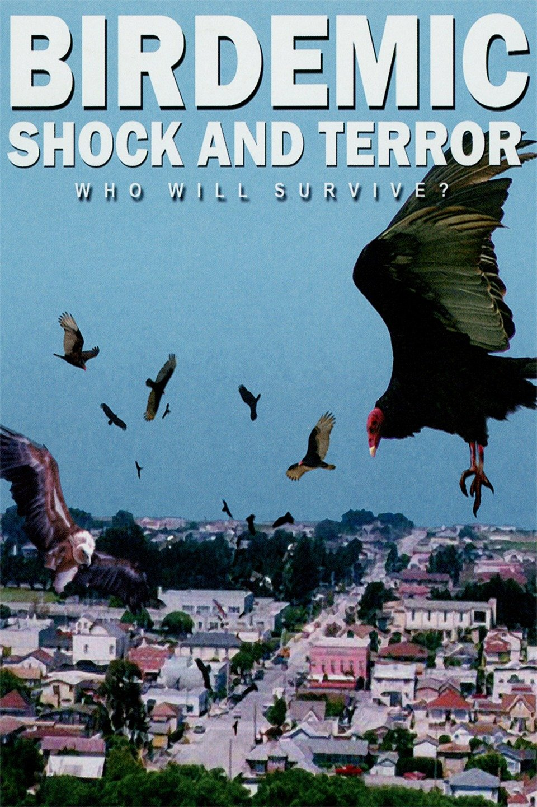

tommy wiseau için ya senin ben amına koyayım
dedirten, sayko bir
başka film. sayko film severler istanbul eş başkanı olarak, bugüne değin
yüzlerce-binlerce b movie izledim. tommy için de baya
iyimserdim ama tam olarak aradığım tadı alamadık sanki. efenim bu film
için 6 milyon dolar bütçe ayrılmış ki; bir b movie için hayli
yüksek bir rakam. bu bütçede bir b movie çekeceksen; beni
gereceksin, bana sorgulatacaksın, bana
"ben ne izledim lan şimdi"
dedirteceksin. koca film boyunca beni
şaşırtan 2 veya 3 sahne olmuştur.
1- esas oğlan tommy ile karısının arasına girip
3some takılmak isteyen komşunun tüysüz
oğlunu bak evladım olmaz, ayıptır
diye insanca ikazı.
2- düğün öncesi sağdıçlarla top sektirme. bunlar dışında saçma bir sahne olmadı. oyunculuklara gelecek olursak; flash tv 'den beter amk. tommy'nin filmin sonunda bir yakarma sahnesi var ki; ben böyle bir beceriksizlik, böyle boktan bir oyunculuk görmedim.
ama böyle filmlerde bu tarz oyunculukları severim. şimdi tommy wiseau'nun son filmi (bkz: best f(r)iends) adlı filmini izleyeceğim. tür olarak komedi/gerilim diyor ki; işin içinde de tommy olduğuna göre yine saçma sapan, bütçe düşmanı bir b movie bizi bekliyor. bu filmi de yine greg sestero ile yazmış ki; the room filminde de yazar kadrosunda kendisi vardı.
 |
 |

|